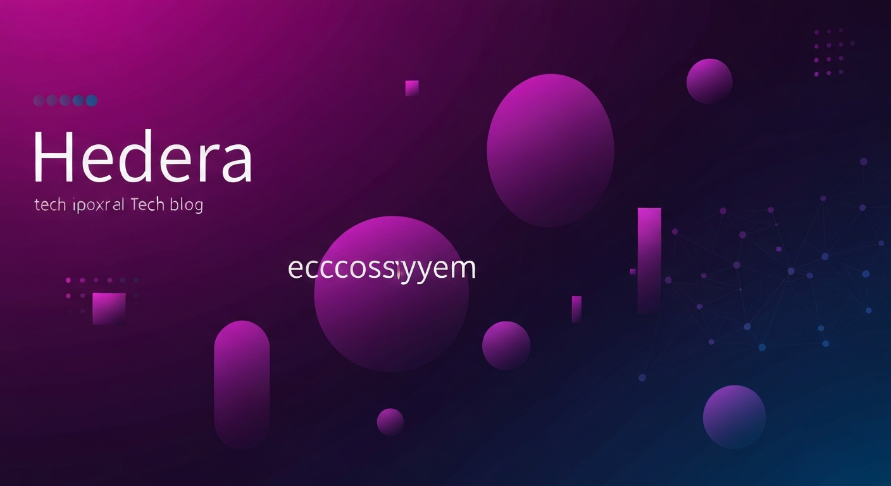

Verifying that tags pills render and code blocks become Gist embeds for Medium import.
Verifying that tags pills render and code blocks become Gist embeds for Medium import.
Medium has two persistent pain points when importing technical content:
This post tests both fixes simultaneously.
When the blog has fenced code blocks, the publisher creates a GitHub Gist for each block and saves a parallel -medium.md file with Gist URLs in place of the original code.
When you import the -medium.md file via Medium's importer, each Gist URL becomes a properly formatted, syntax-highlighted code embed.
def fetch_hedera_balance(account_id: str) -> int:
"""Fetch HBAR balance for a given Hedera account."""
client = Client.for_mainnet()
query = AccountBalanceQuery().set_account_id(account_id)
response = query.execute(client)
return response.hbars.to_tinybars()
For JavaScript users, the SDK looks similar:
import { Client, AccountBalanceQuery } from "@hashgraph/sdk";
const client = Client.forMainnet();
const balance = await new AccountBalanceQuery()
.setAccountId("0.0.12345")
.execute(client);
console.log(`Balance: ${balance.hbars.toString()}`);